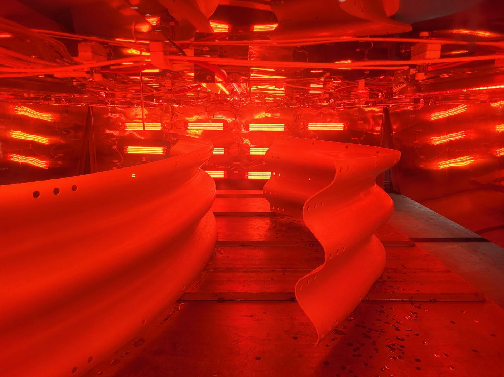
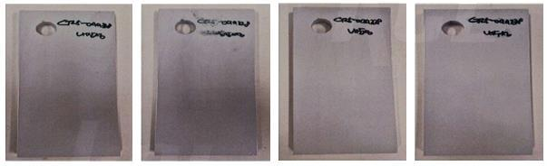

NET New Excellent Technology
Certification documents for environmentally friendly surface treatment and e-coating technology.

E-coating technology tested for adhesion, abrasion resistance and weathering performance.
Electrolytic etching prepares the bonding surface. Zirconium pretreatment and e-coating then improve surface protection of galvanized corrugated structural plate.
Certification documents for environmentally friendly surface treatment and e-coating technology.
View the Innovative Product designation certificate for functional e-coated corrugated structural plate.
Price negotiations are ongoing. Registration with Korea’s Public Procurement Service has not yet been completed.
Results from the 2024 NET and 2026 Innovative Product presentations. Read them with the test conditions and comparator specimens.
Cross-cut adhesion classification 0 at 1 mm spacing after separate 72-hour acid, alkali, water and humidity exposures.
2026 presentation, p.23 · KCLMean abrasion mass loss: 97 mg → 58 mg. CS-17 wheel, 1,000 g load, 1,000 cycles.
2026 presentation, p.24 · KCL · KoptriNeutral salt spray results for 14 original and maximum-size variants reported in the presentation.
2026 presentation, p.26 · KTRNo cracking, blistering, splitting, flaking or peeling in accelerated UV weathering testing.
2024 NET site-assessment presentation, p.15 · KCL| Property | Test conditions | Reported result |
|---|---|---|
| Adhesion after acid / alkali exposure | 10% sulfuric acid or 10% sodium hydroxide, 23±1°C, 72 h each · 1 mm cross-cut spacing | Classification 0 |
| Adhesion after water / humidity exposure | Water: distilled water, 60±1°C, 72 h / Humidity: 60±1°C, 95±5% RH, 72 h | Classification 0 |
| Abrasion resistance comparison | CS-17 · 1,000 g load · 1,000 cycles | Comparator: 97 mg → candidate product mean: 58 mg |
| Permeation resistance comparison | 10% sodium chloride · 10% sodium hydroxide · 30% sulfuric acid, 48 h each | No abnormalities in the candidate product / red rust on the comparator in the presentation |
| Neutral salt spray | 500 h · 2026 presentation | No abnormalities reported |
| Accelerated weathering | UV, 1,000 h: KS M ISO 4892-3 · KS A 0063, 2024 NET material Xenon, 300 h: 2026 presentation | No abnormalities in either test |
| Additional tests | Impact resistance · Pinholes · Leaching of four heavy metals, 2026 presentation | No abnormalities reported in the presentation |
Sources: 2024 NET site-assessment presentation, p.15; Innovative Product presentation dated 14 April 2026, pp.23–26. Results apply to the tested specimens and conditions, not service-life predictions. The abrasion reduction is approximately 40.2%, calculated from mean losses of 97 mg and 58 mg. NET certification and Innovative Product designation are separate from procurement registration. Price negotiations are ongoing; registration is not yet complete.
Explore the process, product range and test information through the coating equipment and product literature.
Electrolytic etching in sodium bicarbonate solution creates microscopic surface texture, followed by zirconium pretreatment and waterborne acrylic e-coating. The process is designed to improve adhesion and resistance to corrosive and abrasive environments.
Actual process and finished-product photographs from pp.8–9 of the 2024 NET site-assessment presentation.




Select a document to view the original.
Technology overview based on REXSTEEL’s 2024 NET first-stage and site-assessment presentations.
The presentation identifies surface preparation and improved paint adhesion on large hot-dip galvanized components as development objectives.
Electrolytic etching in sodium bicarbonate solution creates a micro-textured surface for paint adhesion.
Zirconium pretreatment followed by functional e-coating, developed for large corrugated structural plates.
Actual specimen photographs from the test documentation, showing adhesion assessment and before-and-after abrasion testing.


Functional e-coated corrugated structural plate is under procurement price negotiation. Registration with Korea’s Public Procurement Service is not yet complete.
Confirmed models, specifications, item identifiers and purchasing guidance will be provided after registration.
Contact us about products, design and construction support.